Lead white
Painted roughly in the shape of the butterfly and left wet, so that the wing's scales stick to it.

 RuyschBouquet of Flowers · 1708All 16
RuyschBouquet of Flowers · 1708All 16A studio guide · Amsterdam, 1708
Imagine you are Rachel Ruysch, in your forties, the most sought-after flower painter in Amsterdam, in the year the Elector Palatine names you his court painter. This guide follows how you might have built up one bouquet, from a dark ground to the last petal. Then it shows the one step that is documented: a real Red Admiral's wings, pressed into wet white paint and lifted off, leaving their scales behind.
No full technical study of this canvas has been published. The butterfly print was described by a conservator at the Doerner Institut in Munich in 2024; the ground follows another Ruysch painting, analysed at the Mauritshuis. The other stages are inferred, and each chapter opens with a note on what its evidence is. The slider steps through seven stages; stages 1 to 6 are reconstructions, made partly with AI.
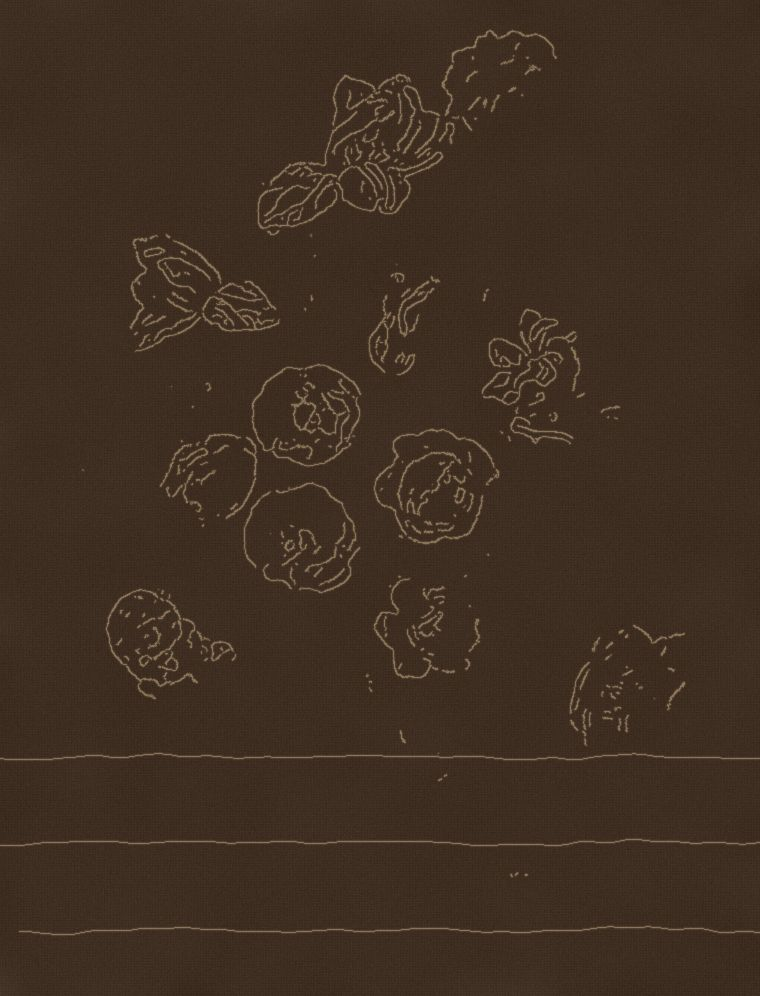
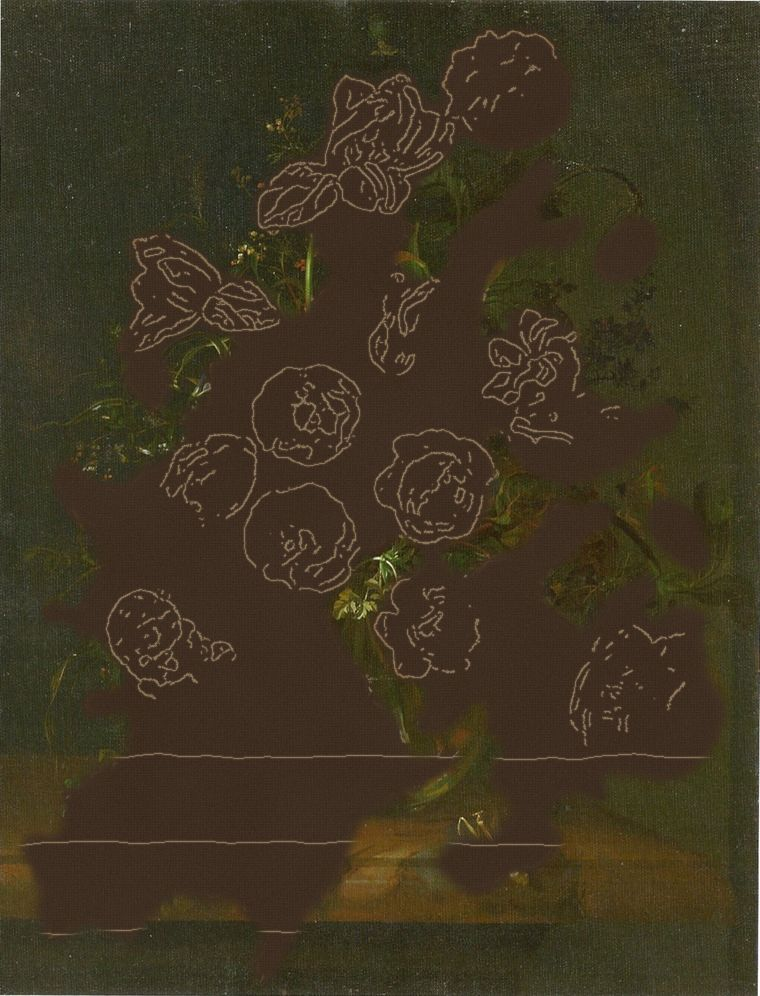
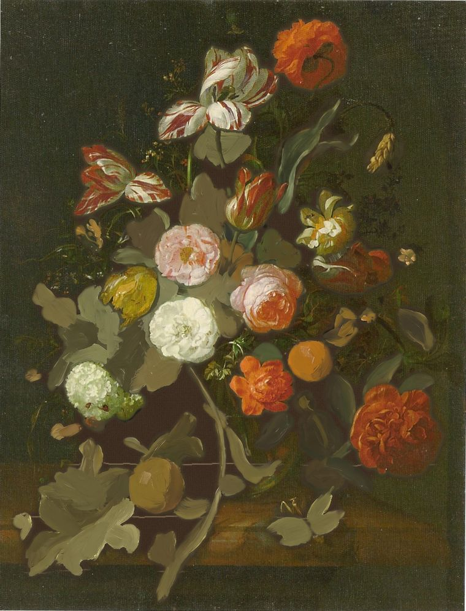
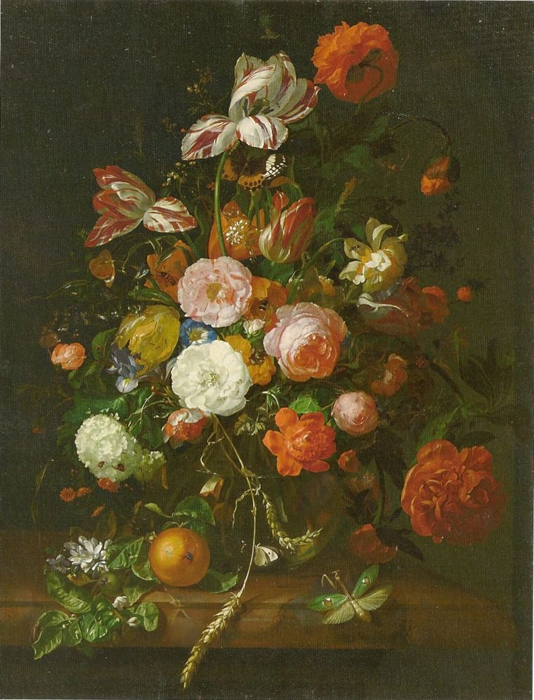
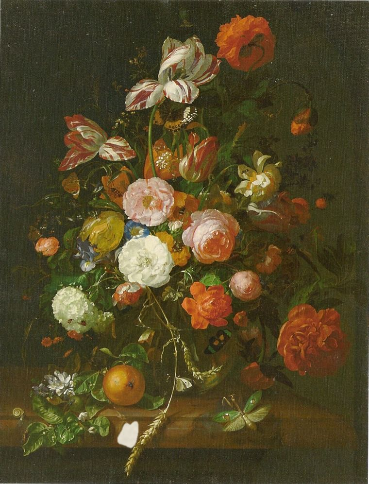
The wing pressed: today
Stage 7 of 7A real Red Admiral's wings pressed into the white and lifted off, the scales left in the paint, the tips glazed. The painting as it is, 92.3 by 70.2 cm.
EvidenceThe 2024 Munich exhibition booklet and its biographies; the Met's record of the 1692 portrait. Your birth date and much of your early life rest on later biographies.
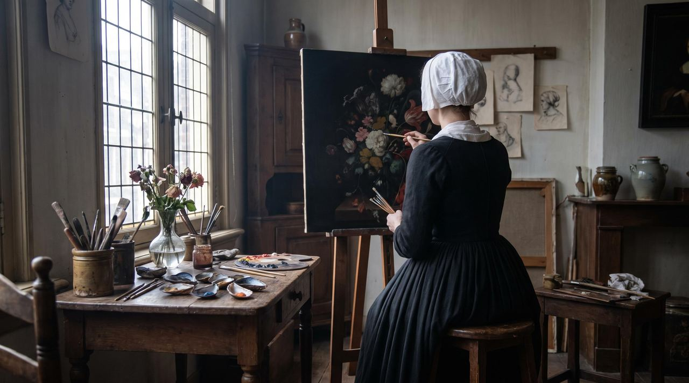
You are Rachel Ruysch, born in The Hague in 1664. Your father, Frederik Ruysch, is an anatomist and botanist; your mother, Maria Post, comes from a family of painters and architects. In 1666 the family moves to Amsterdam.
At about fifteen your parents pay for an apprenticeship with Willem van Aelst, the best-known still-life painter in the city. You stay about three years, until his death in 1683. From him you take a way of building a bouquet: not symmetrical, but swept on a diagonal from lower left to upper right, with flowers turning in and out of the light.
In 1693 you marry the portrait painter Juriaen Pool; you will have ten children. In 1701 the two of you join Pictura, the painters' confraternity in The Hague. You are its first woman member. Women cannot join the painters' guild in Amsterdam.
EvidenceThe exhibition booklet on Frederik Ruysch and on Otto Marseus van Schrieck. That you used specimens from your father's collection in this painting is not documented.
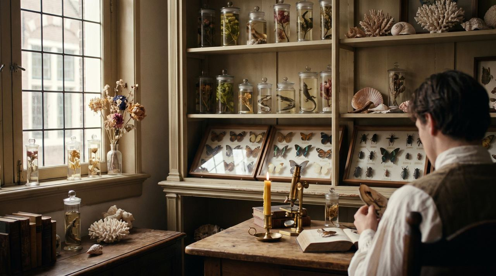
Your father lectures to the surgeons' guild, trains the city's midwives and, from 1685, directs Amsterdam's botanical garden. He is famous across Europe for his preparations: bodies and organs injected with tallow, wax and cinnabar so that they look alive, kept in jars of spirits. He opens his collection to visitors as a museum; in 1717 he sells it to Peter the Great.
Flowers, insects and reptiles were part of the household. Flower pieces of this period often gather in one bouquet plants that do not bloom at the same time: a convention of the genre, not a record of one vase.
From Otto Marseus van Schrieck, who had worked with Van Aelst in Italy and died in Amsterdam in 1678, you take more than motifs. He pressed real butterfly wings into his paintings, and so, sometimes, will you. The Munich exhibition suggests you may even have used specimens your father bought from his estate; it says no more than that.
EvidenceThe exhibition booklet on your appointment and on Zacharias Conrad von Uffenbach's visit of 1711; the Bavarian State Painting Collections' record, which says this canvas came from the Düsseldorf gallery in 1806. No document read names it as painted for the Elector.
By now your paintings are ordered up to a year ahead. When the traveller Zacharias Conrad von Uffenbach visits in 1711, he finds two finished pieces only because they are waiting for their buyer, Pieter de la Court in Leiden, who has paid 1,500 guilders for the pair. Your brushwork is so fine, the Munich exhibition reports, that by your own account you finish only three or four paintings a year.
In 1708 Johann Wilhelm, Elector Palatine, makes you his court painter, with a yearly salary and gifts in exchange for one painting a year. You do not have to live at his court in Düsseldorf; you stay in Amsterdam. Later he and his wife, Anna Maria Luisa de' Medici, stand godparents to your youngest son and come to Amsterdam for the baptism.
Probably. It is dated 1708, the year of your appointment, and it reached Munich in 1806 from the Düsseldorf gallery, where Johann Wilhelm's collection hung. But the record does not say that he commissioned it, or that it was the first of your yearly paintings for him.
EvidenceMarlena Schneider (Doerner Institut, 2024) for the white of the print and the vermilion and black on the wing tips; Albrecht and Meloni (2025) for the ground of a different painting, the Mauritshuis Vase with Flowers of 1700. Nothing else about this canvas's materials has been published.
The canvas is 92.3 by 70.2 centimetres. Its ground, its paint layers and its pigments have not been published. Conservators and scientists in Munich and elsewhere studied your technique for the 2024–25 exhibition, but what has appeared so far is a short article on the butterflies and the titles of talks.
The closest published evidence is your Vase with Flowers of 1700 in the Mauritshuis, eight years earlier and also on canvas. Its ground is two dark brown layers of earth pigments, chalk and lead white, the upper with more and finer lead white. The cross-section here assumes the same for this canvas and says so.
The Munich exhibition also showed films on X-ray pigment analysis of your paintings and on an early use of Prussian blue, a pigment first made in Berlin in the first decade of the 1700s. Which painting had it was not stated; nothing here assumes it.
What has been found, and where. The swatches approximate each colour in oil.
Painted roughly in the shape of the butterfly and left wet, so that the wing's scales stick to it.
Glazed over the scales of the wing tips, with black.
A deep black, also glazed over the scales of the wing tips. Which black is not stated.
Not a pigment: the coloured scales of a real wing, left in the paint when it was lifted off.
The two dark brown ground layers of your 1700 painting in the Mauritshuis. Assumed here, not found here.
EvidenceAlbrecht and colleagues (2023) on the Mauritshuis flower pieces, of which only the summary was read; the Munich booklet on the c. 1682 Flower Piece. Nothing on this canvas: every step in this chapter is inferred.
A dark brown ground, as under your 1700 bouquet. It gives the dark background a head start.
Mark the ledge and where the main blooms go. A study of nineteen flower pieces in the Mauritshuis found that Jan Davidsz. de Heem's circle began with abstract patches of colour, circles and ovals, but that Van Aelst and you planned your compositions differently. How exactly is not in the part of the study read for this guide, so the lines shown are a placeholder.
Brush in the near-black background and the stone ledge, leaving the place of the bouquet bare. That is one common sequence; whether you worked this way on this canvas is not known.
In your Flower Piece of about 1682, an X-ray fluorescence scan made for the exhibition shows a stone arch drawn in vermilion in the background, then abandoned and painted over. Nothing like it has been reported for this canvas.
Your earliest painting in Munich, the Flower Piece of about 1682, was conserved for the exhibition. Its mercury map, mercury being the metal in vermilion, showed the outline of the arch you gave up. The same painting has butterfly prints of which only fragments survive; the restorers decided not to fill the losses, so that the prints stay legible.
EvidenceThe painting itself and the exhibition booklet. The order of the three steps is inferred; the plants are identified by eye, not from a botanical study.
The finished canvas shows no seam between passages: the Munich exhibition calls your brushwork invisible. So the order below is a reasonable guess, not a finding.
AI-generatedAfter step 3: insects with the brush
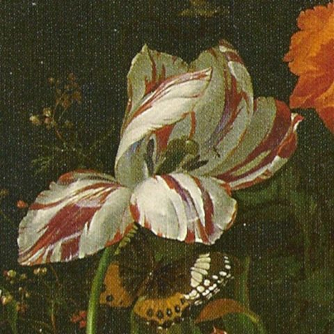
Begin with the flowers that carry the arrangement: the striped tulips, the roses, the red poppy at the top and the white guelder-rose ball at the left. Their placing sets the diagonal sweep from lower left to upper right that you learned from Willem van Aelst.
Nothing published says in what order you painted the flowers of this canvas. Large blooms first is a common sequence and the one shown here.
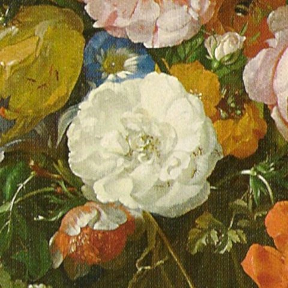
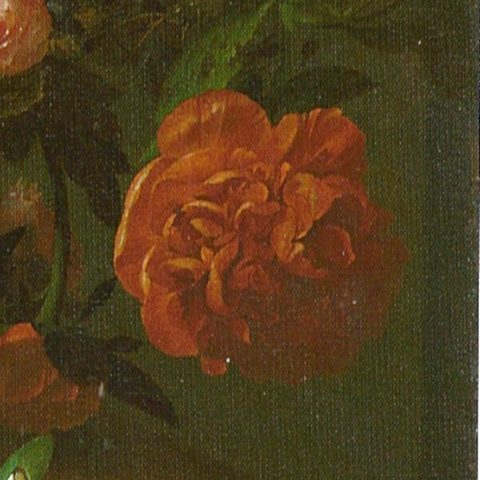
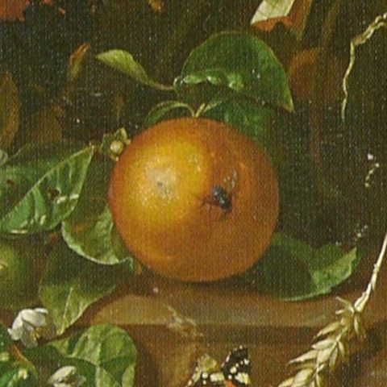
Then fill in around them: leaves turning in and out of the light, the small flowers, the stems, and the ears of wheat that hang down over the ledge. An orange sits on the stone at the left.
Your own estimate, as the Munich exhibition reports it, was three or four paintings a year. How long this one took is not recorded.
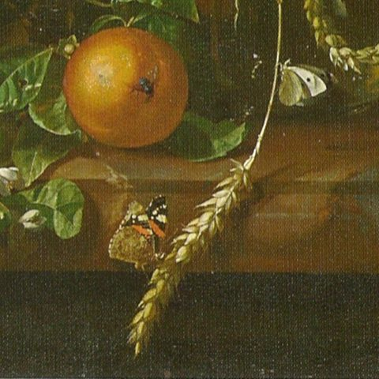
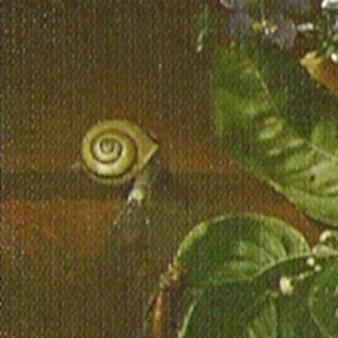
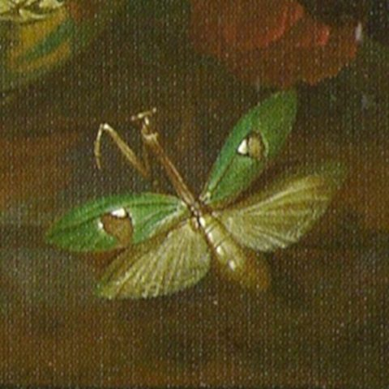
Last come the animals: a grasshopper on the ledge, the snail, moths and butterflies among the flowers. Whether any of these, besides the Red Admiral, is a print rather than painted has not been reported.
For the Red Admiral, paint its rough outline in lead white and leave it wet. Chapter VII follows what happens next.
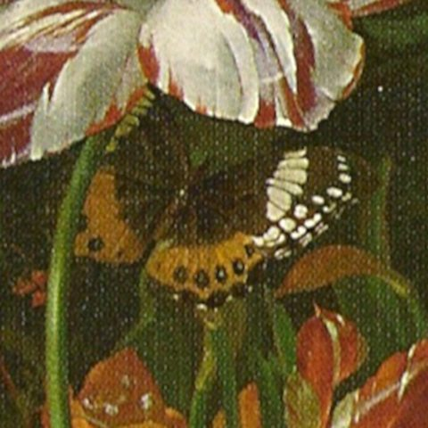
EvidenceMarlena Schneider, Doerner Institut (2024), who examined the Red Admiral under the microscope; the Munich booklet on the method. This is the best-documented step in the guide.
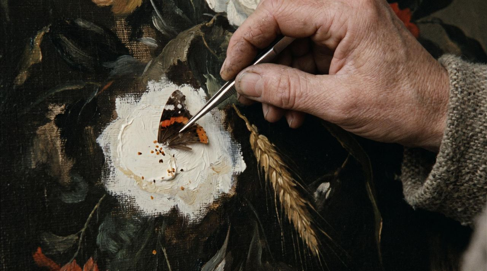
Paint the rough shape of the butterfly in lead white and leave it wet. Take a real wing, from a dead butterfly, and press it into the paint; then lift it away. The coloured scales stay stuck in the white, and with them the pattern of the wing, down to the fine veins and hairs.
Not every scale will take, and the body, head and antennae cannot be printed. Paint those in with the brush, and fill gaps in the pattern. Varnish and oil also make some scales go clear, which is another reason for touching in.
Here you chose a Red Admiral, a native butterfly, and set it on a stalk of wheat at the bottom of the picture, at the viewer's eye level. Under the microscope the whole wing proves to be covered in scales. You can see the strongly patterned underside of one wing, with its typical half-ring markings, and part of the upper side of another: you printed two wings one over the other. You seem to have added only a little paint to the pattern. Over the scales of the wing tips you glazed a deep black and a bright vermilion.
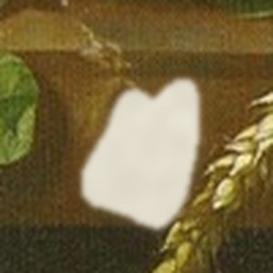
AI-generatedStage 6: the outline in wet lead white.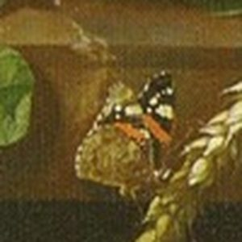
Today: the printed wings.The print was found in 2024, during the research for the exhibition, and the Munich conservators call it nearly perfectly preserved. That is rare. Butterfly scales are fragile, and most prints in old paintings survive only in fragments, worn by light and by rough cleaning. In your Flower Piece of about 1682 the restorers took off the yellowed varnish under a stereomicroscope so as not to lose the remaining scales.
Not as far as anyone has reported. The published find is the Red Admiral. The other butterflies and moths in the bouquet may be painted, printed or both; they have not been described.
EvidenceThe Bavarian State Painting Collections' record; the Munich booklet; Pigage's catalogue of the Düsseldorf gallery (1778). No condition report or treatment history for this canvas has been published.
The painting entered the Bavarian collections in 1806 from the gallery in Düsseldorf, Johann Wilhelm's picture gallery, one of the finest in Europe. Some of the paintings you made for him appear in the drawn wall views of the Düsseldorf and Mannheim galleries; whether this one does has not been checked for this guide. Today it belongs to the Bavarian State Painting Collections and hangs in the Staatsgalerie in the Neues Schloss at Bayreuth.
For the exhibition Rachel Ruysch: Nature into Art, shown at the Alte Pinakothek in Munich, then at the Toledo Museum of Art and the Museum of Fine Arts, Boston, in 2024–25, conservators looked closely at your Munich paintings, and the butterfly print on this one was found. A fuller account of their technical findings has not yet been published.
The image this guide is built on is a scan of a printed reproduction from 2007, before that examination. Its colours are warmer and its darks flatter than the painting's.
This canvas's ground, and whether there is any drawing under the paint. The order in which you painted it, and how long it took. Its pigments, beyond the vermilion and black on the butterfly. Whether the other butterflies are prints. Whether it is signed, and where. Whether the Elector commissioned it. What the X-ray and pigment studies made for the 2024–25 exhibition found.